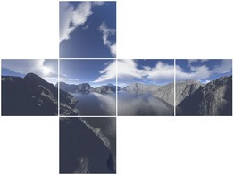

Помимо skydome, существует еще один способ воссоздания неба. Название говорит само за себя - это так называемая "небесная коробка" - куб, окружающий сцену со всех сторон. К граням куба применяются специальные текстуры с нарисованным задним планом. Это может быть не только небо, но и горы, море, лес - любой пейзаж. В этом и заключается преимущество скайбокса.

Подобные текстуры получают в программах трехмерного моделирования путем рендеринга шести проекций на сцену камерой с углом зрения в 90 градусов. Помимо скайбоксов, эти текстуры (которые иногда называют кубическими или трехмерными) могут применяться в статичных картах кубического проецирования (cubemaps).
В Xtreme3D кроме вышеупомянутых шести текстур может использоваться еще одна - для облаков. В качестве облаков создается дополнительная плоскость внутри куба.
Вы можете создать несколько скайбоксов с любыми элементами: например, только с одними облаками. Так можно сделать несколько слоев облаков, чтобы было реалистичнее. Вы можете динамически анимировать текстуры, чтобы получить движение облаков. Кроме того, если сделать любой объект дочерним для скайбокса, он будет зафиксирован по отношению к небу. Таким способом очень просто добавить солнце, луну, планеты… Несмотря на кажущуюся простоту и примитивность, скайбокс - очень мощный инструмент. Если подойти к делу творчески, можно создать фантастические по красоте пейзажи.
Единственный недостаток скайбокса - это ограниченное пространство деятельности игрока. Пейзаж не приблизится, сколько бы к нему не шли. И к облакам на самолете тоже не подняться. Поэтому скайбокс применим только в тех играх, где игроку заведомо не дано большой свободы перемещения. Это могут быть экшн, аркады, некоторые гонки, а также интерьерные сцены (где пейзаж виден только из окна).
real SkyboxCreate(real parent);
Создает новый скайбокс и возвращает его id.
parent - указатель на родителя.real SkyboxSetMaterial(real skybox, real sbm, string material);
Применяет материал к заданной грани куба skybox. Грань определяется константой sbm:
skybox - указатель на скайбоксsbm - индекс грани. Доступны следующие значения sbm:sbmTop = 0 - верхняя граньsbmBottom = 1 - нижняяsbmLeft = 2 - леваяsbmRight = 3 - праваяsbmFront = 4 - передняяsbmBack = 5 - задняяsbmClouds = 6 - плоскость облаковmaterial - имя материала.real SkyboxSetClouds(real skybox, real offset, real size);
Задает опции плоскости облаков - смещение по оси Y относительно центра куба, а также масштаб.
skybox - указатель на скайбоксoffset - смещениеsize - масштаб.real SkyboxSetStyle(real skybox, real sbs);
Задает стиль скайбокса.
skybox - указатель на скайбоксsbs - стиль скайбокса. Доступны следующие значения sbs:sbsFull = 0 - точка обзора совпадает с центром куба (значение по умолчанию)sbsTopHalf = 1 - куб смещен вверх на половину своей высотыsbsBottomHalf = 2 - куб смещен вниз на половину своей высотыsbsTopTwoThirds = 3 - куб смещен вверх на треть своей высотыsbsTopHalfClamped = 4 - куб смещен вверх на половину своей высоты, нижняя грань обрезана.